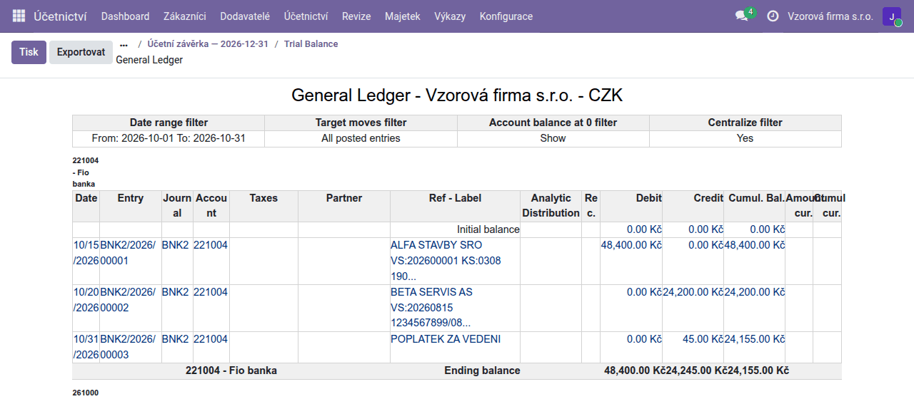
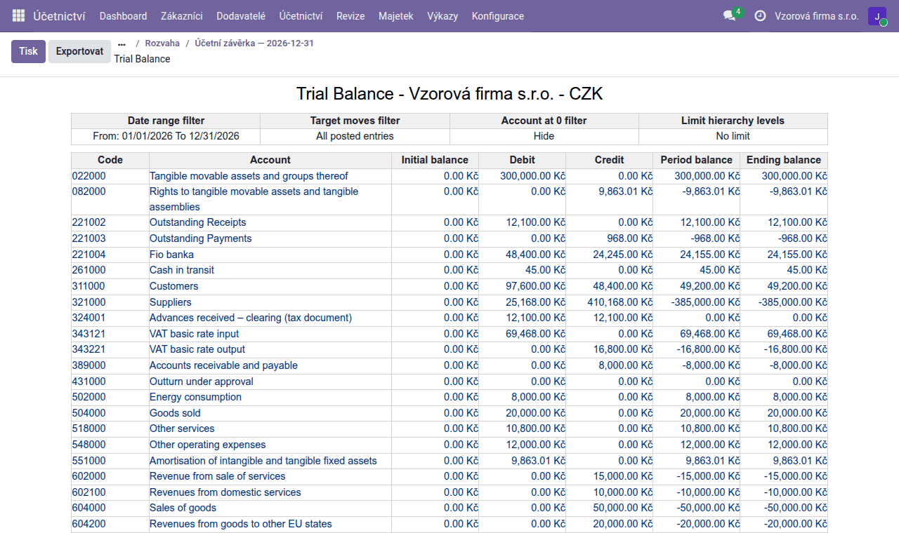
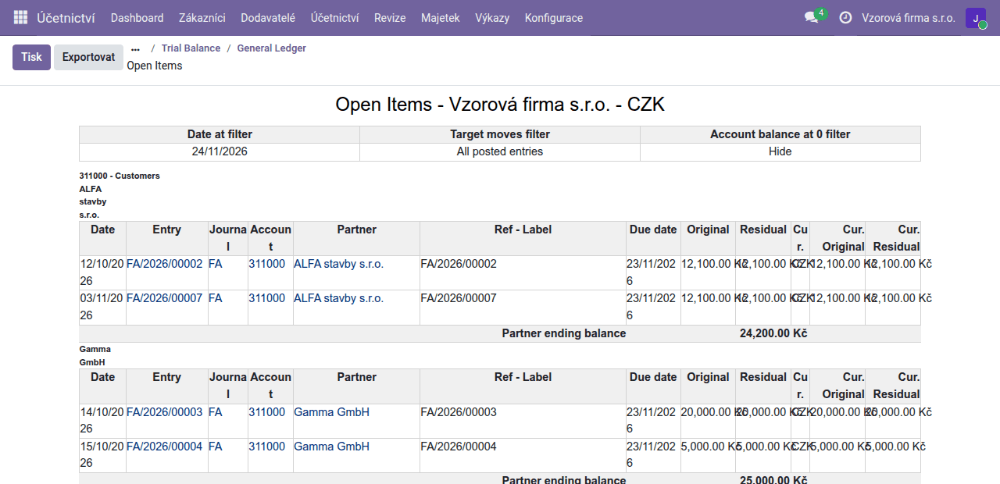

Návod k úloze
Účetní knihy a výkazy
Deník, hlavní kniha, obratová předvaha a saldokonto v Odoo — který výkaz je která kniha, jak je spustit, číst a exportovat a jak odsouhlasit zůstatky s partnery.
| Země | Česko |
|---|---|
| Edice | Odoo Community |
| Zahrnuje | account, account_financial_report, l10n_cssk_account_financial_report, l10n_cssk_partner_balances, l10n_cssk_core |
K čemu tento návod slouží
Účetní knihy, které požaduje zákon o účetnictví, jsou v Odoo výkazy: nic se nevede dvakrát a každý výkaz se při otevření vypočte z účetních položek. Tento návod říká, který výkaz je která česká kniha, jak ho spustit a na co si dát pozor. Pojmy vysvětluje Odoo pro českého účetního.
| Potřebujete | Výkaz | Kde |
|---|---|---|
| deník | Kniha deníku | Účetnictví → Výkazy → Účetní výkazy OCA |
| hlavní knihu | Hlavní kniha | tamtéž |
| obratovou předvahu | Předvaha | tamtéž |
| saldokonto | Otevřené položky, Saldo dle splatnosti | tamtéž |
| kontrolu přiznání k DPH | Výkaz DPH | tamtéž |
| jakýkoli jiný pohled na zápisy | Účetní položky | Účetnictví → Revize → Kontrola |
| rozvahu, výkaz zisku a ztráty | Zákonné výkazy | Konec roku |
| manažerské výkazy | Výkazy MIS | Manažerské výkazy v MIS Builderu |
Spuštění výkazu
Každý výkaz v Účetních výkazech OCA otevře okno se stejnými prvky:
| Prvek | Význam |
|---|---|
| Rozsah dat, Datum od, Datum do | období; u výkazů k určitému dni Datum k |
| Cílové zápisy | Všechny zaúčtované zápisy — účetní knihy — nebo Všechny zápisy včetně návrhů, chcete-li vidět, jak budou knihy vypadat |
| Vyloučit uzávěrkové a archivní deníky | vynechá deníky uvedené jako deníky závěrky roku, takže i uzavřený rok ukazuje své zůstatky — viz Uzávěrkové deníky |
| filtry pod nimi | účty podle rozsahu kódů, partneři, deníky, analytické účty |
Zobrazit ukáže výkaz na obrazovce, Exportovat PDF a Exportovat XLSX ho vytvoří jako soubor. Na obrazovce dělají totéž tlačítka Tisk a Exportovat a kliknutím na zápis nebo účet ho otevřete. Nadpisy a záhlaví sloupců samotných výkazů jsou anglicky i pro uživatele s češtinou.
Deník — Kniha deníku
Chronologický záznam všech zápisů. Zvolte období a Účetní deníky — všechny pro deník celé účetní jednotky — a jak zápisy seřadit (Datum nebo Číslo zápisu) a seskupit (Účetní deník dá oddíl za každý deník, Bez skupiny jeden souvislý seznam). Každý zápis je uveden se svými řádky: účet, partner, popis, strana MD a D.
Hlavní kniha
Každý účet s počátečním zůstatkem, pohyby v období a průběžným zůstatkem:

- Na kartě Filtrovat účty ji omezte na některé účty (rozsah kódů, nebo Pouze pohledávkové účty / Pouze závazkové účty), případně na partnery.
- Seskupeno podle Partneři rozdělí účty pohledávek a závazků podle partnerů, každého s vlastním zůstatkem — saldokonto jednoho účtu.
- Skrýt účty s konečným stavem 0 vynechá účty, které končí nulou.
Obratová předvaha — Předvaha
Jeden řádek za účet: počáteční zůstatek, obrat MD a D, zůstatek za období a konečný zůstatek.

- Skrýt účty na 0 vynechá účty bez zůstatku a bez pohybu.
- Zobrazit hierarchii přidá mezisoučty podle skupin účtů — třída, skupina a syntetický účet.
- Zobrazit detaily partnera rozepíše účty pohledávek a závazků podle partnerů.
Předvaha je výchozím bodem každé uzávěrky: obrat účtu 343 proti přiznání k DPH, účtu 551 proti odpisovému plánu, zůstatky, které se na konci roku převádějí přes účet 702.
Saldokonto — Otevřené položky a Saldo dle splatnosti
Otevřené položky vypíší každý neuhrazený doklad k určitému dni (Datum k) podle účtu a partnera, s datem splatnosti, původní částkou a dosud neuhrazeným zbytkem. Saldo dle splatnosti totéž sečte za partnera do sloupců podle toho, jak dlouho jsou položky po splatnosti.
V obou oknech nejdřív vyberte účty — výkaz je vyžaduje: zaškrtněte Pouze pohledávkové účty nebo Pouze závazkové účty, případně obojí, nebo zadejte rozsah kódů.

Výkazy se počítají zpětně: s Datem k v minulosti se doklad zaplacený až potom ukáže jako k tomu dni otevřený.
K odsouhlasení zůstatků přímo s partnery — pro inventarizaci pohledávek
a závazků na konci roku — použijte Účetnictví → Zákazníci → Odsouhlasení
zůstatků: uložené odsouhlasení za partnera k určitému dni, které vytisknete,
odešlete a označíte jako odsouhlasené nebo sporné. Vzájemné pohledávky
a závazky se započítávají v Účetnictví → Dodavatelé → Dohody o zápočtu.
Obojí popisuje
l10n_cssk_partner_balances.
Výkaz DPH
DPH zaúčtovaná v období, sečtená podle daňových štítků (Na základě Daňové štítky) nebo podle daňových skupin, se základem a daní. S volbou Detail daní je pod každým štítkem uvedena každá daň. Použijte ho, když hledáte, ze které daně pochází rozdíl na řádku přiznání k DPH; samotné přiznání je v Měsíční uzávěrce DPH.
Účetní položky
Účetnictví → Revize → Kontrola → Účetní položky je každý řádek každého zápisu v jednom seznamu. Odpoví na to, na co žádný pevný výkaz: filtrujte podle účtu, partnera, deníku, daňového štítku nebo data, seskupujte podle kteréhokoli z nich (účet a pak partner; daňový štítek a pak měsíc) a výsledek exportujte. Filtr, který stojí za uložení, jsou nezaúčtované řádky běžného období.
Uzávěrkové deníky
Jakmile zaúčtujete uzavření a otevření účetních knih přes účty 710, 702
a 701 (Konec roku), je každý účet k 31. prosinci
nulový a otevírací zápis vypadá jako pohyb nového roku. Deník s těmito zápisy
uveďte v Účetnictví → Konfigurace → Nastavení, blok Česká / slovenská
lokalizace, pole Deníky závěrky roku: předvaha, hlavní kniha, otevřené
položky a saldo dle splatnosti ho pak ve výchozím stavu vynechají — pole
Vyloučit uzávěrkové a archivní deníky je zaškrtnuto za vás — a stejně tak
zákonné výkazy. Chcete-li vidět samotné uzávěrkové zápisy, zaškrtnutí
zrušte
(l10n_cssk_account_financial_report).